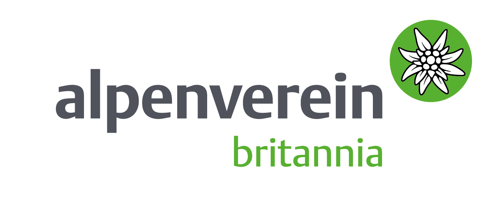

Organizations
- Home
- Organizations
- AAC (UK)

The Österreichischer Alpenverein (ÖAV) was founded in Vienna in November 1862 to foster and encourage the developing sport of mountaineering. In 1869 a number of German and Austrian Sektions got together to establish the Deutscher Alpenverein (DAV) which is largely credited to Franz Senn, the village priest in Vent (Ötztal) then later in Neustift (Stubai).His associates were Johann Stüdl, a wealthy Prague businessman, and Karl Hofmann, a young lawyer from Munich. Franz Senn maintained that the two associations-clubs should work together and issued a joint statement of intent in 1871, later ratified as the DuÖAV in 1873.
The ÖAV [Austrian Alpine Association] was the first alpine club to be established in mainland Europe, celebrating its 150th anniversary in 2012. Presently, the ÖAV has over 500,000 members in 210 Sektions including Sektion Britannia. The main strength of the Alpenverein is that membership is totally inclusive and open to everyone who has a love of the mountains, regardless of age or ability despite its semi-elitist title.
On 27 July 1948 the United Kingdom Section was established. This Section was initially known as 'Sektion England' but later changed its name to the more inclusive 'Sektion Britannia'. Henry became the first President of AAC(UK).